Different Common Break
The final vacations before the final semester begin. People who came to Uruguay temporairly Those who left temporairly-
Date:21/12/2023
Climate:Cloudy Rainy
Location:Irrelevant
Chiara says that tomorrow people could go to her house for another pool party.
-
Date:22/12/2023
Climate:Sunny
Location:The rambla, cafe misterio
In the groupchat, people post photos of their pools and how clean they are.
Alex richerri sees Timo in the rambla, they talk about what they will do in the vacations.
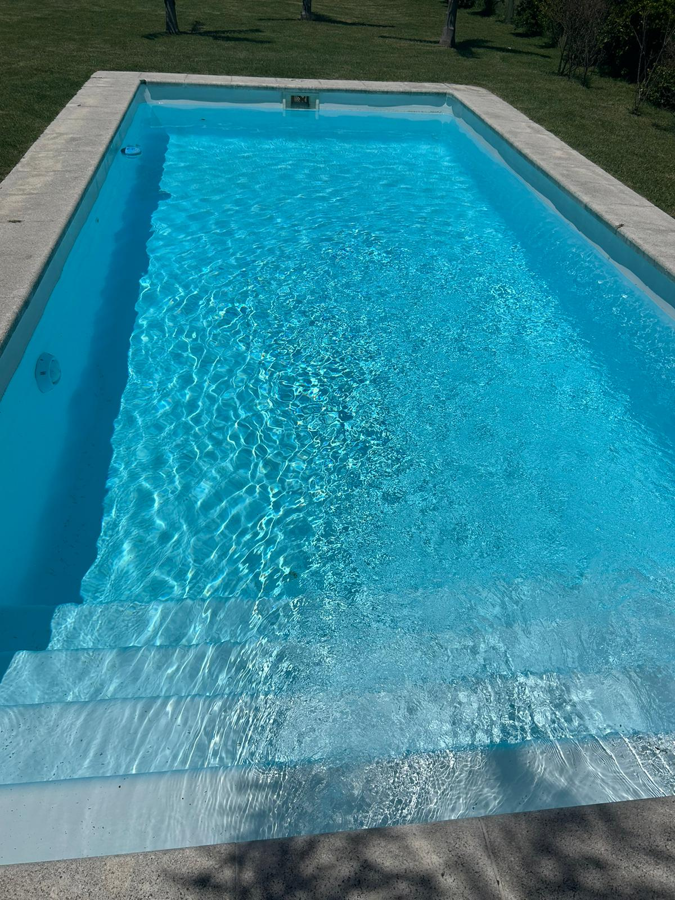 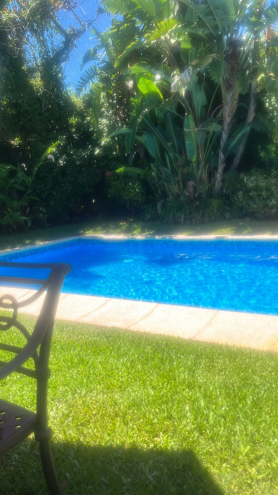 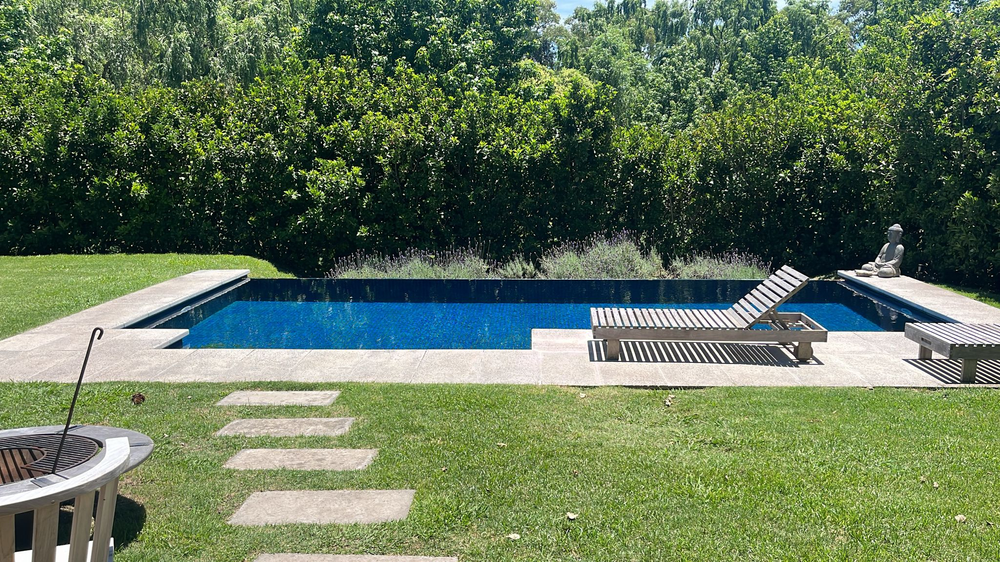Fabri's, Chiara's, and Martina's pool
Marina and Vale eat sushi at Cafe Misterio
-
Date:23/12/2023
Climate:Sunny
Location:Martina's House
Santino and probaably others went to Martina's house.
-
Date:24/12/2023
Climate:Sunny
Location:Many places
Christmas happened, and everyone celebrated it differently. Marina, Vale, Zalma, and Tania were together.
-
Date:26/12/2023
Climate:Sunny
Location:Irrelevant
Milagros wins against Fabrizzio in clash royale. She posts the following picture and flexes her win in the chat.

Mili's evidence that she won
A considerable amount of time later, Fabri retaliates by posting a picture of Mili's messed up knee.

Mili's knee
i don't know how it happened.
-
Date:27-28/12/2028
Climate:Sunny
Location:Punta de El este
Santino, Mati, Chiara, Martina, Marina, and others unite to go to a concert or electroparty thing.
-
Date:29/12/2023
Climate:Sunny
Location:Fede's Home
Fede was at his house on a normal day, until some girls knock on his door and give him the following object.
Fede recognised Milla's authoreal voice in the piece of art, he also knew it was milla because it said "feta" which is Milla's nickname for fede.
So Fede opened it, here are the contents.
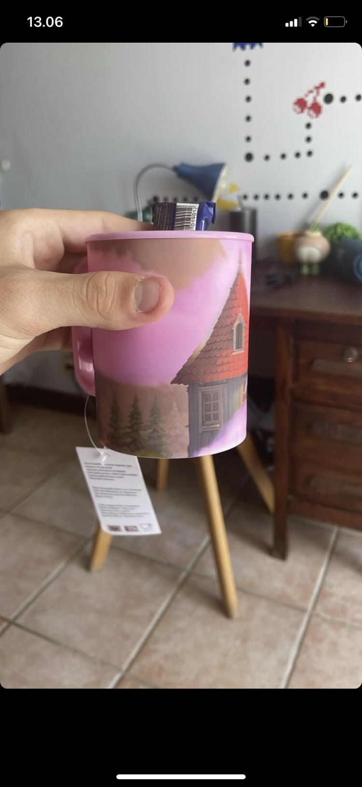
 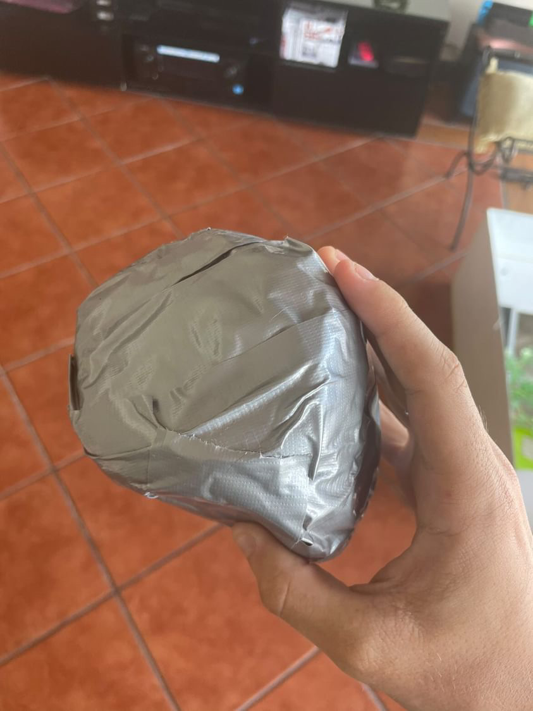
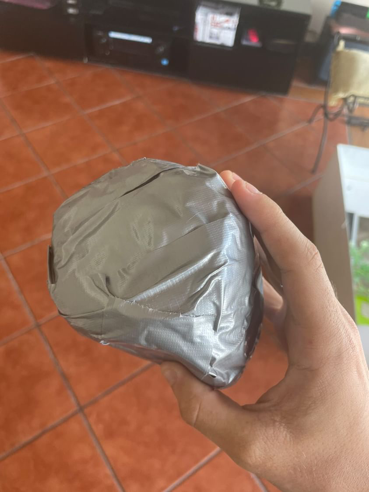
Milla sent Fede a present via "her workers"
Fede was really happy, he immediately posted it on instagram and shared this surprise with the table tube gang. Milla said that she had sent "her workers" the following insturctions.
-
Date:31/12/2023
Climate:Sunny
Location:Unkown but probably not Uruguay
Martina finds peacock in her backyard.
Also, it's new years today, so people are going to celebrate this in several different ways.
This is also the year where the Seniors graduate. The UAS Class of 2024 is about to graduate.

Fede for some reason sends this to the groupchat, Dani replies with "Thank you for those wonderful messages fede... I am sure everyone appreciates them"
That image was obtained form a discord call long ago where Marina, Dani, Luca, lupi, Ethan, and others where showing some hangouts conversations that they had in elementary. Fede took a screenshot of what Marina was showing.
.jpg)
.jpg)
.jpg)
Other media sent
-
Date:31/12/2023
Climate:Sunny
Location:Uruguay
It's a new year, here is what Mati, Marina, and probably some others started it with.
Dancing
-
Date:2/01/2024
Climate:Sunny
Location:The street
The cruelness of humanity attacked a poor pigeon leaving it defenseless at the center of a road. The pigeon struggles to survive as the cars pass mercilessly fast. It can't seem to fly for its wing must be damaged. The situation catches Timo's attention and he immdeiately gets off his car to go and help the pigeon. Timo rushes to the middle of the street and picks up the creature, but it was too late. The pigeon's head was wide open, its death is imminent. With the its last breath and its withstood damage, the pigeon uttered to him its name, and out of its open head flowed stories and knowledge. Secrets reified by ignorance, myths and legends too powerful to voice, they spilled like blood all over Timo's hands as he rested clavio in a quieter place. Then clavio took off.

clavio
Timo told the Table Tube Gang a great story about how he failed to save a bird named clavio from dying.
Megan shares her tag, and Timo does aswell, here are the tags.
.jpg)
.jpg)
.jpg)
.jpg) 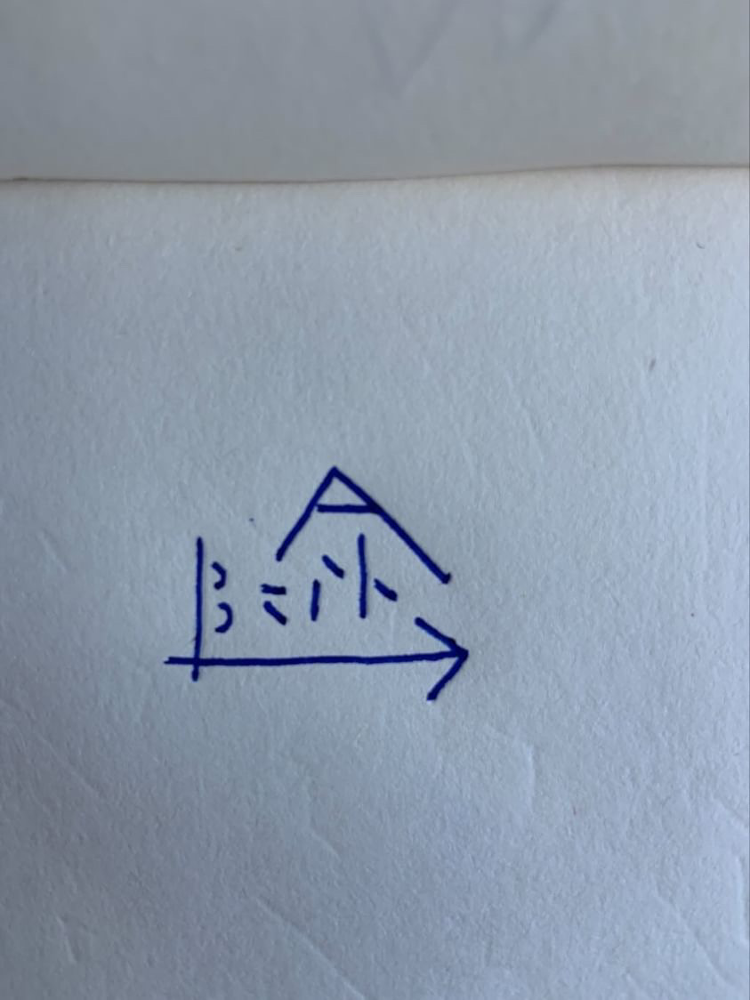
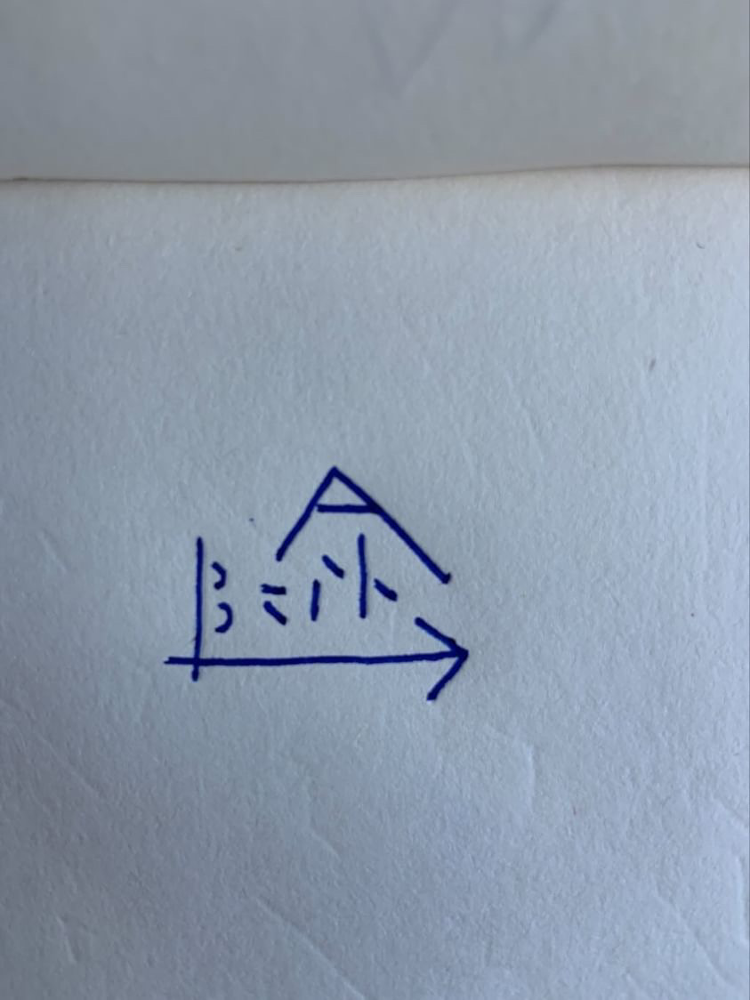
The tags, most of them are megan.
-
Date:3/1/2024
Climate:Sunny
Location:Uruguay
In the purple gang whatsapp groupchat, Bruno and Timo talk about many random things, like Bruno's best friend whose mom flirted with his dad. Bruno at some point also said that because this is the year of the dragons, Megan will have to protect us from the dragons. Timo asked Megan what this was about, Megan affirmed that the dragons were being held back.
Good to know.
-
Date:08/01/2024
Climate:Cloudy
Location:Uruguay somewhere
The peacock adventures continue, San and Martina see a peacock and San names it pancho. They play noises, but pancho wasn't a fan. Later that day Martina finds a cat in that hosue.
-
Date:10/2024/13
Climate:Cloudy
Location:Uruguay
Ale has his apartment all fo himself for the next 4 days so he invites the purple gang over. Only sofe can go so they play baldur's gate and create the following character.

The character
-
Date:15/01/2024
Climate:Sunny
Location:Uruguay
Fede came back from Camp and he got a chocolate ice cream with brownie pieces.
Meanwhile in another spacial coordinate, Heath(Megan's father) catches Megan with spray paint and he isn't happy about it.
Megan's story, by MeganBasically Corey parked his car in the right side of the house but I parked my car in the garage and we had taken Corey's car but we had to bring the paint back into my car but he heard us open the garage and he was like why did you go in through the garage when you parked on the left and we were like idk but I guess today he went and checked in my car bc he was suspicious and he found the bag of paint
She concluded it was Martin Luther King Junior's fault because he gave them a free day which allowed for all of this to happen.
.JPG)
.JPG)
.JPG)
.JPG)
.JPG)
The tags in use
-
Date:16/01/2024
Climate:Rainy
Location:Park near Fede's house
Fede and Timo meet up at a park near Fede's house, it's been raining all day but now it's sunny. Fede talks about all the things they did in camp. They had a war with la intendencia. La intendencia won because Fede's group had put Tang on their yerba but the intendencia people switched up the yerbas. They also disguised themselves as fairies because they had to act out a story where characters from cartoons came to life and their group was tinkerbell. It was like some weather machine that malfunctioned or something.
Then they listen to differnt music, and fede leaves a sign on a tree with Timo's poshka pen. "El tiempo esta despues"
Timo then has to abruptly leave because his sister's ewheel got [They got it back somehow]
-
Date:18/01/2024
Climate:Irrelevant
Location:Irrelevant
The TTG discusses current events, Megan wants to get a tattoo, this idea was inspired by Corey giving Vicky(Megan's sister) a stick and poke tattoo kit. Megan is 18 now and she can do it without her parents consent but she is still going to tell them.
Then Megan talks about how the entire group is falling apart, and how it's exhausting to pull it back together but she wants to because it's all she has.
Also it's Mili's Birthday. She has been saying that every day is her birthday for all of 2023 but today it's actually her birthday... I think
-
Date:19/01/2024
Climate:Sunny and Windy
Location:Rudy's and the Montevideo Park
Timo, Fede, and Sebas go to Rudy and get burgers, however Fede and Sebas arrived late so they all ask for a take out. Sebas cut his hair, and Fede dyed his hair blonde the other day.
Fede hanged out with Alex's girlfriend yesterday and she also knows about Fede's hair.

Rudy
They walk to a place to eat the burger and then they go to an ice-cream place where they eat ice-cream, they discuss languages, concluding English is more useful but spanish has more colourful vocabulary. They also discuss country's anthems, Sebas only knows the part of the German anthem that was removed, saying it was the catchiest part.
Then they go to a park, on the way there they talk about people in the class and how there are a lot of hot boys in the class. Fede was saying something about girls being mid and high but the boys are all high.
They pass through some grasslands, and suddenly a huge swarm of mosquitoes envelopes them and starts attacking, they start running to get off the swarm, once they got out, they were still covered and had to remove many. even Timo's ewheel was full of mosquitoes.

Mosquito
After that attack, they go to a nearby bench and apply mosquito repelent. I don't remember what they talked about at first, but Timo brought up the topic of moss and how there is male and female moss. Sebas then concluded moss has semen, which is true. Fede started talking about Sex education and the lack thereof in the school.
Fede then proceeded to educate them in several sex facts that I chose not to remember. The Sebas asked Fede some questions about gay sex like how does one decide who goes on top or who goes on bottom. Fede goes in full detail about it.
They wonder how the conversation got to this and Timo says that unfortunately he started it with moss.
Sebas then brings up Dani, and how Dani has been texting him like 4 times per week. Then he shows a text that Dani sent him about a dream he had. They were on a bus and Dani said "Hey no homo but you looking fine", and Fede almost died. He started theorising that Dani is actually gay and he has repressed it and he is in denial. Sebas said that he can't imagine Dani with a woman, and Timo said that Dani can be very easily misunderstood. Fede said that Dani might actually be bi because he thinks that he had something for Marina as proven by the emails Dani had sent her
So then they talk about people in class and relationships.
Conclusions- Mati would beat his wife(Fede claims)
- Lupi would get in fights with whoever he marries(He gets in discussions and arguments with the girls in the class very often)
Those are the only ones I remember.
They talk about rizz, Sebas apparently has unspoken rizz, he talks about how in peru he was with this woman that was married to some australian man. The woman giggled at him and he didn't like that. The next day Sebas' mother told him that woman had said if she wasn't married she woudlve married Sebas, or something like that.
Timo found it kind of weird but Fede was proud, "rizz is rizz". They also mention how Eitoku has insane rizz. "Eitoku pulls!"-Fede. Sebas says that he will soon have to go to the gym, he asks Timo if he had done anything interesting. Timo tells him 2 things.
That he started going to the gym, pull push legs. And Sebas is surprised that Timo is doing actual weights.
And about a dream about how they went to a haunted hotel from Carrasco, it had a restaurant, and after escaping it, they were chased by the staff. The hotel was somewhere in positos, but it was the only tall buidling, as if the city hadn't been built yet and that hotel was the first actual building. Sebas remarks that there used to be a hotel near, but it was demolished, he unfortunately does not know if it was haunted or not.
Finaly, Timo leaves his tag, and Fede writes some song lyrics. Sebas says that Timos tag is better than his signature and Timo doesn't like that. And they leave after that. Sebas goes to the gym and Fede somewhere else.


The end messages and Timo's Tag
-
Date:22/01/2024
Climate:Irrelevant
Location:Irrelevant
So Sofe has gone to a punta del este film camp and she made a film that she wants to share with the purple gang. Bruno also shares his audio setup
Film by Sofe
-
Date:24/1/2024
Climate:Sunny
Location:Punta del Este
It's Chiara's birthday!! She spends the day with Santino on a boat and they probably have fun.
Also Chad meets Timo while they are both at the doctor. The entire Murphy family except Doug Murphy is there to get a checkup. Apparently they had gone to patagonia and did stuff there and they probably had fun.
-
Date:29/01/2024
Climate:Clear
Location:Unspecified
Martina asks through the groupchat when are the mocks and when are the official IB exams.
Fede replies that the Mock exams are from the 18-22 and the IB exams start with physics on the 25th of April and end the 16 of may.
Fede also sends this link that contains all the information about the exam schedule.
Fabri is mad that they are talking about school when vacations aren't over yet.
-
Date:30/01/2024
Climate:Sunny
Location:Irrelevant
Fabri proposes for everyone to do a juntada, Mili doesn't want to and she gets kicked out of the groupchat.
-
Date:01/02/2024
Climate:Sunny and really hot
Location:Uruguayan American School, Obra, and Chiara's house
Today is orientation day, new students are assigned ambassadors that guide them through the school. Unfrotunately there are no new students, it's not surprising since this class is about to graduate. Mati, Eitoku and Timo come to the school anyways to assist. Federico Berman talks to Timo and Mati about what they did in the vacations while Ms Nina introduces the school to the new students. Lara is also there. Mati later says that Federico Berman seemed like a cool guy.
Then they go on a tour of the school. The cafeteria is still under construction, Timo sneaked in and took the following pictures.
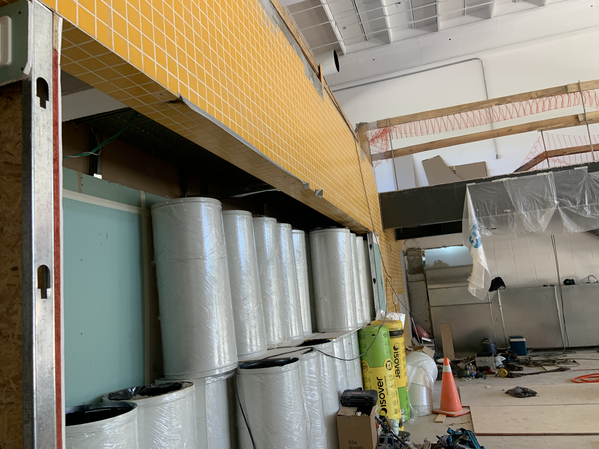


How it's looking
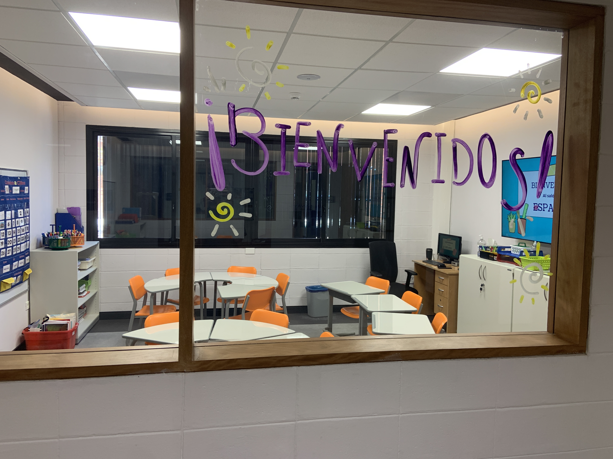 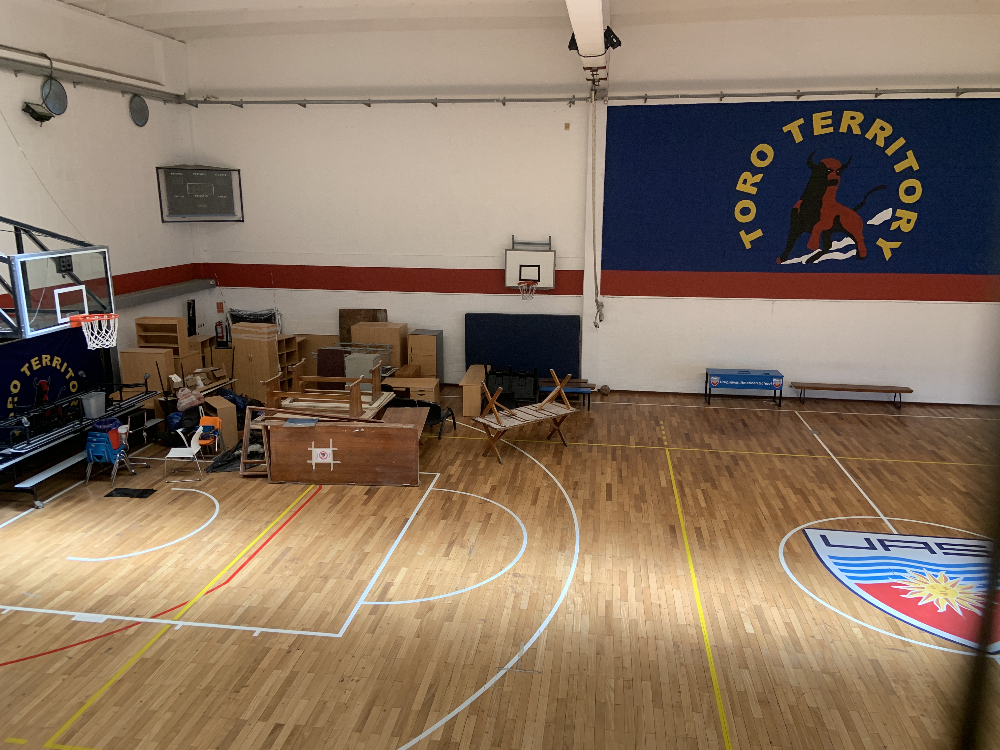Also, new classroom
Eitoku and Mati help people with computers while Timo goes to talk to Mr Turner about the ToK essay that he failed. Turner says that it was an issue of citation and but the content was actually good.
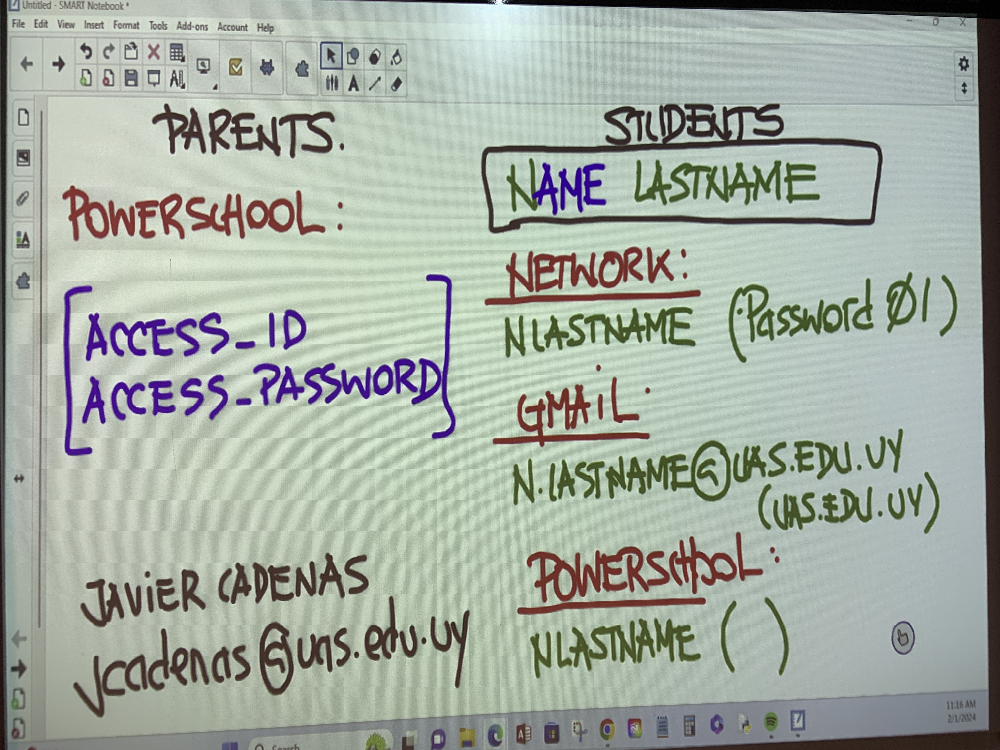The requirements
Meanwhile Eitoku and Mati are struggling to help a new student input his passwords to the accounts correctly.
Timo leaves because it appears there is nothing left to do. He goes to buy an ice-cream. He has a 2-for-one deal with Itau but he doesn't want the second ice-cream. The cashier offers him to come get the second ice-cream some other time. She writes it on the receipt.
Then Timo goes to obra and to his surprise he finds Chiara, Mati, and Eitoku. They sat down together and talked about stuff while they ate pokebowls.
- How everyone saw Timo on the ewheel while passing through San Nicolas.
- Chiara started journaling because she felt lonely in the vacations
- Eitoku got to go to japan and it war real fun for him. He got a ring that changes colour depending on who wears it and a neclace that has the phrase "I love you" in many different languages. Timo and Chiara first read "I love chi" because they were looking at it the wrong way round.
- They talk about how Chiara and Santino are doing "Good *Thumbs up*"-Chiara. Chiara mentions how Santino used the word "Sass" with Chiara which is very uncharacteristic of him.
Chiara wants an ice-cream, but she wants someone to accompany her to go to Fredo. Timo remembers that he has the 2 for 1 receipt and he gives it to Chiara.
So they eat ice-cream. Eitoku shows Timo the colour changing ring, Timo is purple, Eitoku is green, and Mati is also green.
They talk about origami's aswell. Eitoku informs that origami is the paper, and the bird thing that people do is actually called a つる (a crane written in japanese, pronounces "tsuru").
Then Mati and Eitoku go to Chiara's house, they said that Martina might join them. And Timo left.
-
Date:03/02/2024
Climate:Sam
Location:Sam
It's sams birthday
-
Date:04/02/2024
Climate:Sunny and really hot
Location:Greensboro
The Swamp Dwellers go to a abandoned prision and do goofy stuff there, here are some photos of that. And also some graffiti megan did.
.jpg)
.jpg)
.jpg)
.jpg)
.jpg)
.jpg)
.jpg)
.jpg)
.jpg)
.jpg)
.jpg)
Megan suffering from her crimes
So I did miss some events but I don't want to go back and put them there because that would be a lot of work which requires time that I don't have.
Martina did not die her hair red this time she died it a more natural brown.
Fede dyed his hair blondish attempting to dye it white.
Bruno was visited by cousins and family
Eitoku saw his friends and pets in japan
Chad went somewhere in Uruguay
Sebas and Timo grew a beard.
Bruno made several beats and shared them with the Purple Gang